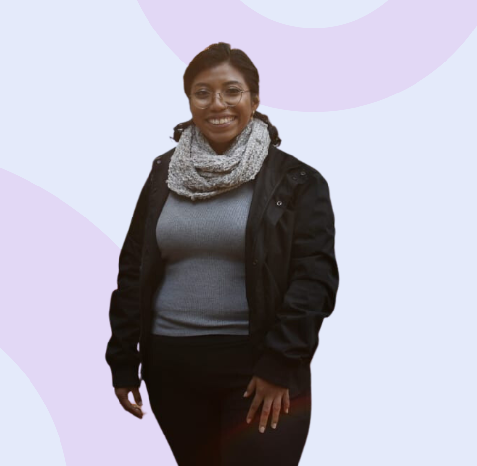

Hola, soy Grecia Olalde

Licenciada en Administración de empresas. Apasionada de la educación, el desarrollo humano y el desarrollo de páginas web. Actualmente trabajo como Consultora Educativa Jr en programas de intervención educativa. A lo largo de mi trayectoria he liderado y participado en proyectos de impacto social en temas de liderazgo, educación, género y perspectiva de juventudes. Ahora deseo incursionar en el diseño y creación de páginas web para apoyar en la digitalización de proyectos educativos y ampliar las oportunidades para todas y todos.
Desarrolladora Front-End Jr
Egresada del Bootcamp TECNOLOchicas Pro. Fundación Televisa y Microsoft.
Creo páginas web para programas y proyectos educativos para que aprender sea la puerta a un mundo de posibilidades.
Consultora Educativa Jr en Talentum MX
Gestión y operación de programas de intervención educativa para jóvenes de media superior y superior con organizaciones reconocidas. Coordinadora de tutores en programas de género.
Mentora y Tallerista
He participado con diferentes organizaciones públicas y privadas brindando orientación, asesorias y talleres a jóvenes de bachilleratos y universidades públicas en temas de liderazgo femenino, primer empleo, proyecto de vida y expresión oral.

Me complace recomendar a Grecia Olalde dado que sus habilidades demostradas durante el bootcamp de Tecnolochicas mostro ser una persona enfocada en aprender, conocer y practicar continuamente para desarrollar sus habilidades como desarrolladora fronted jr.
Jennifer Morales
Desarrolladora Frontend Jr
Durante el bootcamp TECNOLOchicas, Grecia, ha demostrado sus habilidades y destrezas en la programación frontend. Es una persona que le gusta aprender y estar en constante crecimiento, es comprometida, participativa y trabajadora.
Keren Mitsue
Desarrolladora Frontend Jr

¡Grecia, ha demostrado ser una gran estudiante!. Durante el desarrollo de proyectos, ha mostrado un sólido dominio de tecnologías front-end como HTML, CSS y JavaScript, logrando crear interfaces de usuario atractivas y funcionales.
Miranda Jaramillo
Ingeniera de Software